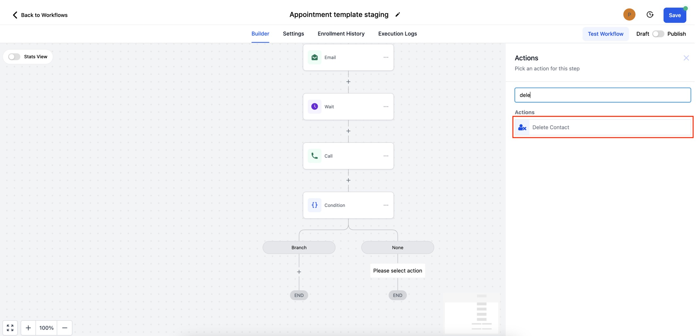
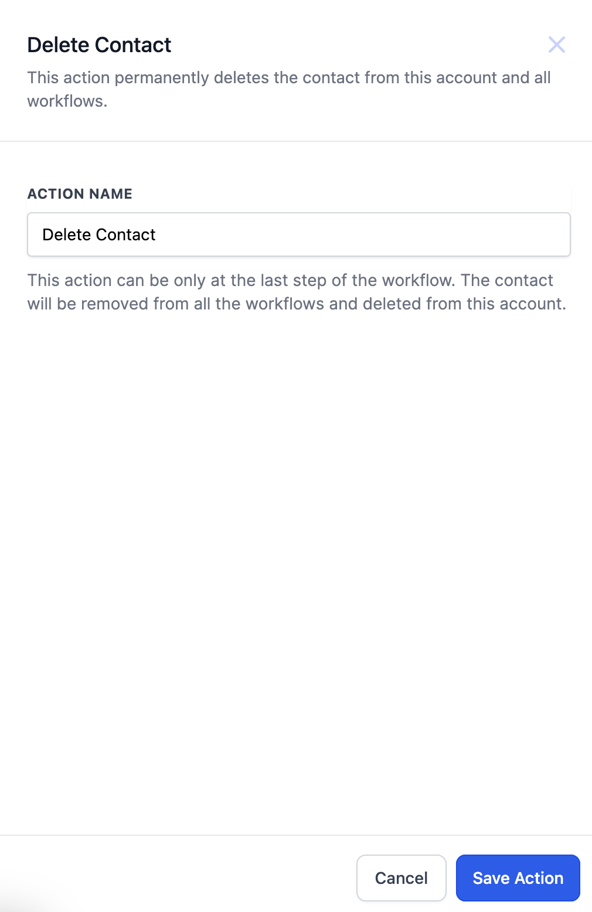

In this Article
- What is Delete Contact Action?
- How to set up Delete Contact action?
- FAQs
- Use Cases
What is Delete Contact?
Delete Contact is a powerful new action in workflow that permanently removes a contact from your account and workflows. This action provides a way to maintain a clean and organised contact list, ensuring you only target relevant leads and prospects.
How to set up Delete Contact action in workflows?
Step 1 - Add the Action - Click the "+" button to add an action. Search for delete contact or scroll down to "Actions" tab to select the same.

Step 2 - Save the Action - Click on "Save Action" to finalise the workflow step.

FAQs
Q: Can Delete Contact Action be added anywhere in the workflow?
A: Delete Contact action can be available only as the last step of the workflow. This action can only be added to the end of the branch.
Q: Can I restore the deleted contact?
A: Manual restoring of the contact can be done at the CRM end.
Use Cases
- Auto deleting spam contacts.
- Delete contact using inbound webhooks or custom webhooks.